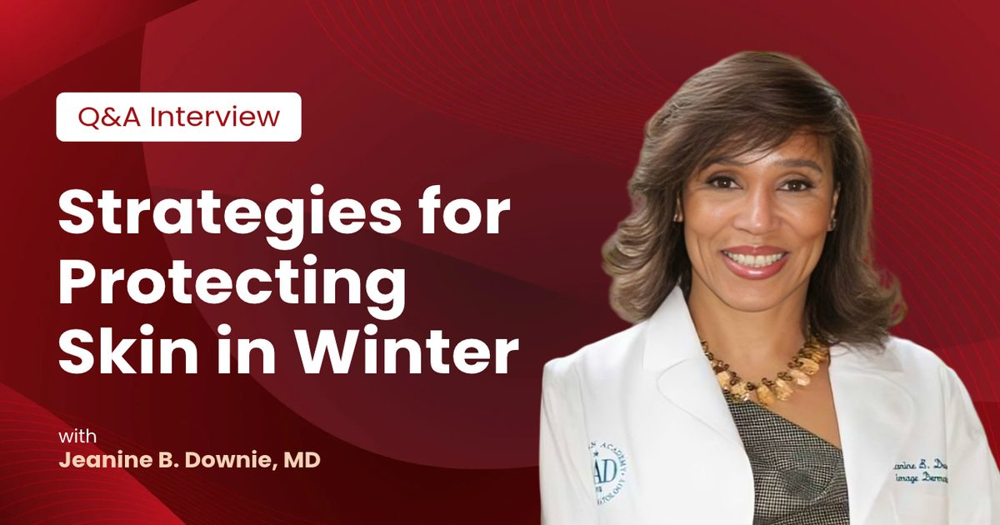

Зачем защищать кожу от солнца зимой: разбор ошибок и рисков
Дерматолог Жанин Дауни объясняет, почему отказ от солнцезащиты в холодные месяцы увеличивает накопленную УФ-дозу и риск онкозаболеваний. Речь идёт не только о пляже, но и о бытовых маршрутах, отражении снега и проникновении лучей через стекло.
Почему УФ-излучение опасно в холодное время года
Многие пациенты перестают наносить спф с первым похолоданием, считая угрозу сезонной. На практике УВА-лучи сохраняют активность круглый год, проникают сквозь облачность, туман и оконное стекло, нанося ДНК кожи повреждения, которые накапливаются годами. Отражение снега и льда усиливает воздействие сверху и снизу, поэтому солнечные ожоги возможны даже при минусовой температуре, а накопленная доза растёт с каждой прогулкой за хлебом или поездкой в машине.
Фонд борьбы с раком кожи рекомендует широкий спектр защиты не ниже 30 спф ежедневно и не ниже 50 при длительном пребывании на улице. Дауни советует использовать средства с защитой от синего света высокой энергии и инфракрасного излучения — тепла, которое также способствует фотостарению. Важно помнить: загаренная кожа — это уже повреждённая кожа, а солярии излучают УФ в десятки раз интенсивнее полденного солнца, что делает их неприемлемыми для профилактики.

Как не упустить ранние признаки рака кожи
Одна из главных ошибок — ждать боли или кровотечения у новообразования. Рак кожи не всегда выглядит как тёмная родинка: любое новое, меняющееся или необычное пятно требует показа дерматологу. Раннее обнаружение делает подавляющее большинство случаев легко лечимыми, поэтому регулярный осмотр всего тела специалистом раз в год — базовая стратегия профилактики, которую нельзя заменять самодиагностикой.
Врачи первой линии и дерматологи должны включать вопросы о коже в рутинные консультации, а пациенты — фотографировать подозрительные элементы для динамики. Не стоит откладывать визит до планового приёма, если пятно изменило цвет, форму или границы. Самостоятельный осмотр раз в месяц с напоминанием в телефоне помогает заметить изменения раньше, чем они станут очевидными для постороннего взгляда.

Привычки, которые помогают защищать кожу каждый день
Дауни три десятилетия рекомендует простой приём: держать солнцезащиту рядом с зубной щёткой или дезодорантом. Привязка к устоявшемуся ритуалу утра снижает вероятность пропуска приложения до нуля. Дополнительно стоит искать тень, носить защищающую одежду, полятые шляпы и очки с УФ-фильтром — это работает независимо от сезона и погоды, создавая многослойный барьер.
Фонд борьбы с раком кожи публикует буклеты, инструкции по самоосмотру и знак рекомендации на продуктах, прошедших проверку фотобиологического комитета. Использование проверенных ресурсов делает профилактику понятной и выполнимой без излишней сложности. Главная цель — превратить защиту из разового усилия в фоновый процесс, сравнимый с чисткой зубов, чтобы кожа получала защиту автоматически.
Кто попадает в зону риска и чего не знают о скрининге
Устойчивый миф о том, что тёмная кожа не нуждается в защите, приводит к поздней диагностике и худшим исходам. У людей с тёмной кожей меланома чаще локализуется на ладонях, подошвах и под ногтях — зонах, которые редко проверяют при самоосмотре и клиническом осмотре. Выживаемость за пять лет у чёрных пациентов значительно ниже, а доля поздних стадий в несколько раз выше, чем у белых, что требует смены подхода к скринингу.
Особое внимание требуют пожилые люди с накопленной дозой УФ, реципиенты органов и работники открытых площадок. По данным ВОЗ и МОТ, профессиональное воздействие УФ повышает риск немеланоматозного рака кожи более чем на половину, а около половины уличных рабочих ежегодно получают солнечные ожоги. Комплексный осмотр без пропуска зон и учёт личных факторов риска — задача как пациента, так и врача, которую нельзя решать формально.
Коротко: Зимняя солнцезащита — не каприз, а необходимость: УФ-лучи активны круглый год, отражаются от снега и проникают через стекло. Регулярный спф, месячный самоосмотр и годовой визит к дерматологу снижают риски радикально.
Наносите ли вы спф зимой и проверяли ли коже за последний год?